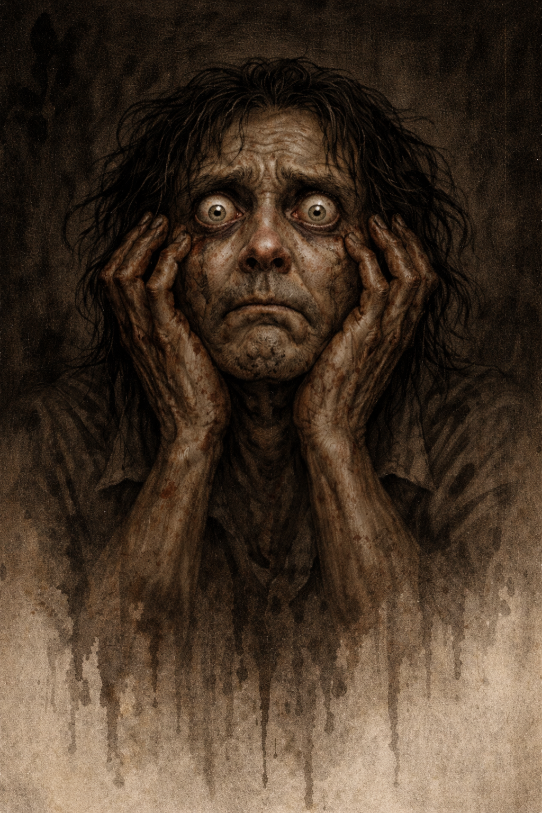
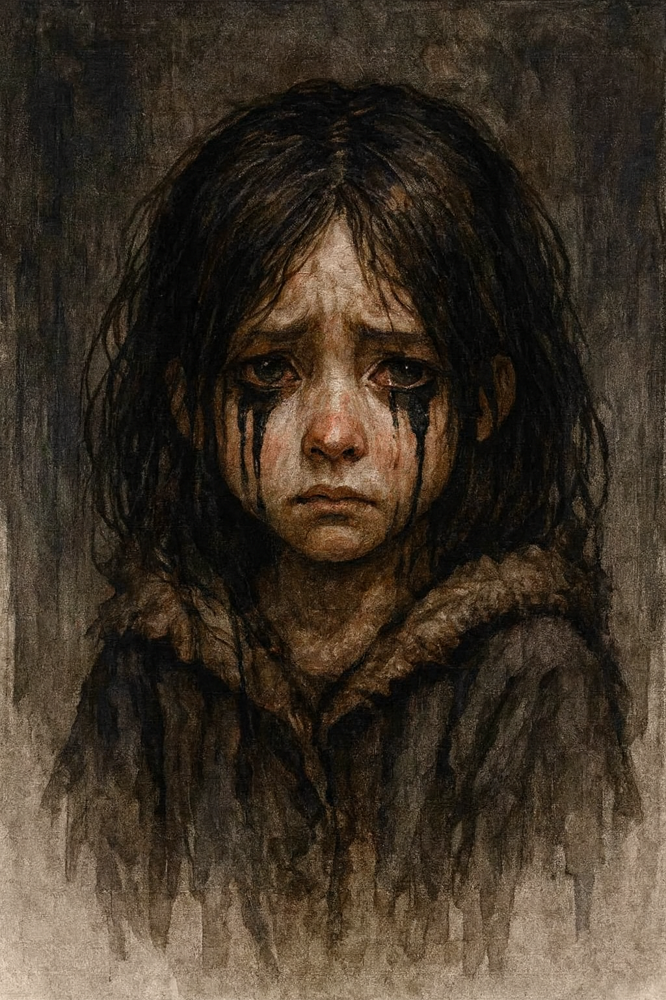
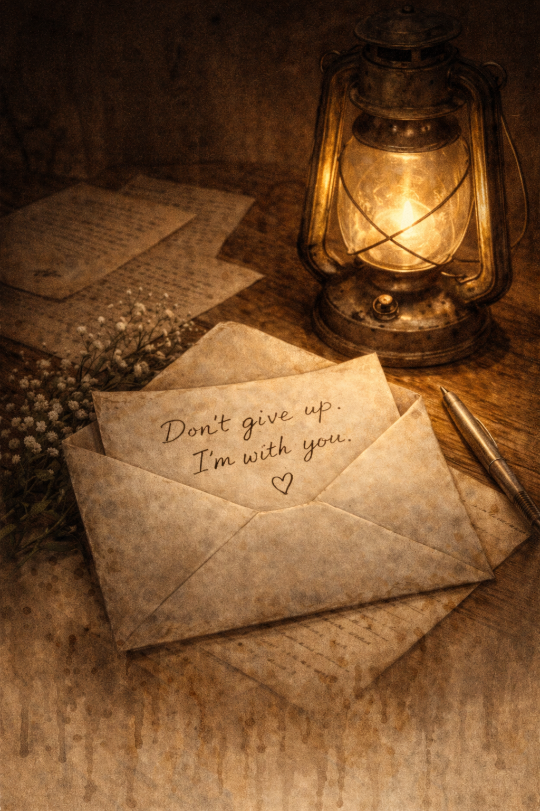

THE WORLD
Reality is broken. Buildings float. Trees grow upside down. The sky is torn open by glowing rifts. All you can do is hope for the world to recover.
THE PREMISE
You work shifts at a quiet asylum. You check on patients. You clean, organize paperwork, and perform routine tasks. Between shifts, you return to your apartment.
Over time, small inconsistencies appear. Notes are misplaced. Radios cut out frequently. Patients repeat phrases you do not remember hearing before. Some rooms feel different each time you enter them. Nothing announces itself as wrong. But nothing feels right.
THE PATIENTS
Joy

He carries a smile that always seems to arrive first, brightening the space before he even steps into it. His laughter rolls out easily, the kind that makes people join in without thinking.
Fear
He notices everything. The smallest shift in expression, the quietest change in the room, the subtle signs most people overlook.
Sadness
She speaks softly, choosing her words with care, as though each one deserves respect. She's very quiet.
Hope
You’ve never met her in person, but she’s the one who helped you secure this position at the asylum. She’s always been pleasant to speak with.
MEDIA GALLERY
A glimpse into the fractured world of Edge of Sanity. Visuals degrade alongside the narrative, revealing a reality that is slowly tearing itself apart.
The asylum suspended in a broken sky.
Reality begins to fracture inside the asylum.

An emotion pushed beyond its breaking point.
DESIGN PHILOSOPHY
Edge of Sanity is a slow-burn psychological horror game about routine, emotional decay, and a reality that gradually comes undone. Set in a quiet asylum, players perform mundane tasks as the environment, its inhabitants, and their sense of normalcy begin to fracture.
PRESS KIT
Title: Edge of Sanity
Genre: Psychological Horror
Platform: PC
Developer: Tetrad Games
Description:
Edge of Sanity is a slow-burn psychological horror game about routine, emotional decay, and fractured reality. Set within a shifting asylum that exists inside a broken mind, players perform mundane tasks while the world, its inhabitants, and their own perception unravel.
Key Features:
- Emotion-driven NPCs that evolve into threats
- Environmental storytelling and reality fragmentation
- Routine-based gameplay that turns unsettling over time
- Minimalist horror with no reliance on jump scares
- Atmospheric audio and visual degradation tied to narrative
Contact:
Tetrad Games